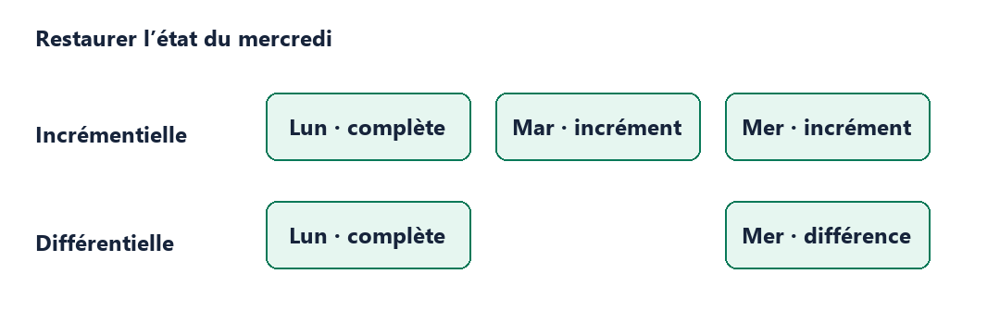

Comprendre le cours
1. Organiser les comptes et les groupes
Un compte représente une identité. Un groupe représente un besoin commun, par exemple accéder aux fichiers des RH. Tu rattaches la permission au groupe, puis tu fais évoluer les membres. Pour vérifier une modification, commence par confirmer l’identité utilisée et les groupes de sa session.
Sous Windows, Get-LocalUser liste les comptes locaux, Get-LocalGroup les groupes et Get-LocalGroupMember -Group Direction affiche les membres du groupe demandé. Un compte local et un compte de domaine peuvent porter un nom similaire et rester des identités différentes. En Linux, l’UID identifie le compte et le GID le groupe. id montre le groupe principal et les groupes supplémentaires. Les mots de passe sont stockés sous forme de hash, dans /etc/shadow sur une installation Linux utilisant shadow.
2. Comprendre les droits réellement appliqués
Sous Linux, r lit un fichier, w le modifie et x permet de l’exécuter. Pour un dossier, ces lettres signifient respectivement lister les noms, modifier ses entrées et traverser le dossier. Un dossier partagé de groupe peut nécessiter le bit setgid pour transmettre son groupe aux nouvelles entrées. Un mode 2770 combine ce bit et des droits complets pour propriétaire et groupe.
Sous Windows, l’onglet Sécurité règle les permissions du système de fichiers. Par le réseau, les permissions du partage s’ajoutent au contrôle NTFS. Un utilisateur doit passer les deux contrôles. Examine aussi les droits hérités du dossier parent. Crée un compte témoin hors groupe pour vérifier les refus.
Un quota limite l’espace ou le nombre d’objets qu’un utilisateur peut consommer selon le système utilisé. Il peut y avoir un seuil souple et une limite dure. Vérifie la configuration sur le bon volume et teste en ouvrant une session ordinaire.
3. Séparer disponibilité du disque et sauvegarde
Le RAID 0 répartit les données entre disques sans redondance. Le RAID 1 réplique les données. Le RAID 5 répartit données et parité et tolère la perte d’un disque. Avec quatre disques de même taille, RAID 5 laisse approximativement trois disques de capacité utile. Dans tous les cas, une suppression ou un fichier chiffré peut être répercuté dans le volume. Il faut une copie restaurable séparée.
Une sauvegarde complète capture tout le périmètre. Une différentielle reprend les changements depuis la dernière complète. Une incrémentielle reprend les changements depuis la sauvegarde précédente. La stratégie se juge en simulant une restauration et en contrôlant les fichiers restaurés.

4. Passer de la VM au conteneur
Une machine virtuelle démarre un système invité avec son noyau. Un conteneur isole un processus et son environnement tout en partageant le noyau qui l’héberge. Docker Desktop peut utiliser une VM pour héberger des conteneurs Linux sur un autre système.
Une image fournit les fichiers et réglages de démarrage. Le conteneur est une instance, même quand il est arrêté. Un volume stocke l’état séparément. Quand la tâche demande la persistance, recrée le conteneur et rattache le volume pour contrôler que les données reviennent.
Publier un port associe un port de l’hôte à un port du conteneur. La commande docker run -d -p 127.0.0.1:8080:80 nginx rend le service accessible depuis la machine hôte sur 8080 dans un exemple local. Vérifie le mappage avec docker ps, puis envoie une requête HTTP au port publié.
Quel fichier faut-il relire pour revenir à mercredi soir ?
Exemple : sauvegarde complète dimanche, puis une sauvegarde incrémentale chaque soir. Lundi A change, mardi B change, mercredi A change encore. L’incrémentale de mercredi contient la dernière version de A, mais B dépend toujours de celle de mardi.
Restaure la complète puis les incrémentales jusqu’à mercredi dans l’ordre. Avec des sauvegardes différentielles regroupant tous les changements depuis dimanche, la complète et la différentielle de mercredi suffisent. Pour vérifier la restauration, ouvre A et B et compare leur contenu attendu.
Sigles et acronymes
- GID · Group ID
- Identifiant numérique d’un groupe sous Unix.
Exemple. Le système vérifie le groupe numérique associé à un fichier avant d’appliquer ses droits. - HTTP · HyperText Transfer Protocol
- Protocole de requêtes et réponses du Web.
Exemple. Le navigateur demande une page et le serveur renvoie son contenu et un statut. - NTFS · New Technology File System
- Système de fichiers Windows.
Exemple. Sur un dossier NTFS, on peut attribuer la lecture à un groupe précis. - RAID · Redundant Array of Independent Disks
- Assemblage de disques pour obtenir des propriétés choisies.
Exemple. En RAID 1, deux disques conservent une copie des mêmes données. - UID · User ID
- Identifiant numérique d’un utilisateur sous Unix.
Exemple. Linux associe les permissions du propriétaire à l’UID du fichier. - VM · Virtual Machine
- Ordinateur simulé par un hyperviseur.
Exemple. On peut lancer un serveur Linux en VM sur le poste de TP.
Du cours aux TD et TP
Questions TD & TP
TD1 · Permettre à une seule personne des RH d’accéder à Confidentiel
Énoncé. Créer Direction, RH et Salariés, limiter le dossier Confidentiel à Direction, puis ouvrir ce dossier à un seul compte RH et comparer deux solutions.
- Dans la VM Windows, crée les groupes locaux et les comptes du TD. Vérifie les membres avec
Get-LocalGroupMember -Group Direction. Dans les propriétés du dossier, va dans Sécurité → Avancé et contrôle quelles permissions proviennent du dossier parent. - Crée par exemple le groupe
Confidentiel-Lecture, ajoute ce compte RH et accorde uniquement le niveau requis au groupe. Ajouter ce compte à Direction pourrait ouvrir d’autres ressources. Une permission directe sur le compte peut fonctionner et devient plus difficile à gérer quand les exceptions s’accumulent. - Refais les essais dans trois sessions ordinaires, avec Direction, le compte RH autorisé et un second RH. Après changement d’appartenance, rouvre la session. Si le dossier est partagé, vérifie séparément l’accès local et l’accès par le réseau.
TD2 · Vérifier qu’un dossier est réellement limité au groupe
Énoncé. Créer trois groupes et des utilisateurs sous Linux, puis vérifier qu’un dossier peut être accessible par un groupe et interdit à un autre.
- Dans la VM Debian du TD, sélectionne des identifiants libres avec
getent groupetgetent passwd. Exemple pour un groupe et son premier utilisateur,sudo addgroup --gid 1001 grp1puissudo adduser --uid 2001 --ingroup grp1 u1. Vérifie avecid u1. - Crée un dossier de test. Donne-lui le groupe
grp1avecchgrpet applique le mode2770avecchmod. Vérifie la troisième triade de droits et l’héritage de groupe sur un fichier créé dans le dossier. - Refais la création et la lecture depuis u1, puis depuis un compte d’un autre groupe. Si u1 échoue aussi, vérifie la traversée des dossiers parents, l’identité de sa session et le groupe réellement associé au dossier.
Application du cours · Restaurer les fichiers au mercredi
Exemple d’application. On fait une sauvegarde complète lundi et une sauvegarde chaque jour. Quelles copies faut-il pour retrouver l’état du mercredi ?
- En mode incrémentiel, pars de la complète de lundi. Applique ce qui a changé mardi, puis ce qui a changé mercredi.
- En mode différentiel, pars de la complète de lundi et applique la différentielle de mercredi, calculée par rapport à lundi.
- Restaure vers un dossier de test. Compare un document créé mardi et un document modifié mercredi. Vérifie également les droits et l’état des fichiers supprimés selon la politique de l’outil.
TP5 · Distinguer image, conteneur et serveur réellement accessible
Énoncé. Vérifier Docker avec hello-world, récupérer deux images de serveur HTTP et contrôler les conteneurs et les ports.
- Dans la machine du TP, lance
docker run --rm hello-worldet lis le message. Avecdocker image ls, vérifie que l’image est disponible. Le conteneur de test sort après impression du message. - Exemple avec Nginx et Apache. Utilise
docker run -d --name web-a -p 127.0.0.1:8080:80 nginxpuisdocker run -d --name web-b -p 127.0.0.1:8081:80 httpd. Les deux écoutent sur 80 dans leur propre environnement. Les ports publiés sur l’hôte diffèrent. - Compare
docker image lsetdocker ps -a. Lance une requête vershttp://127.0.0.1:8080puis 8081. Si une requête échoue, vérifie l’état du conteneur, le port publié et la sortie dedocker logs.